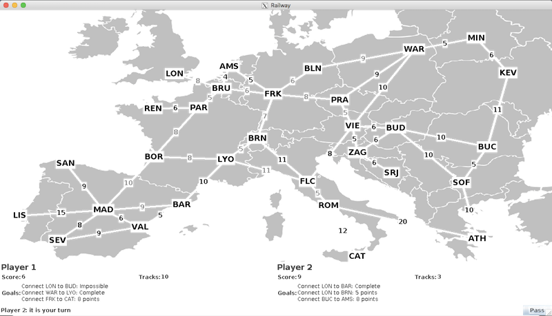
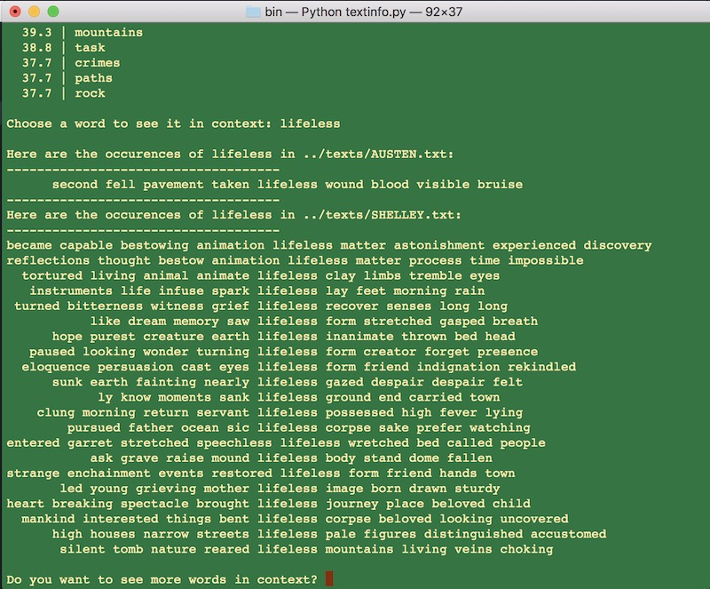

Coding Projects
Bayliss Wagner
Aquarium GameI designed and implemented this code from scratch for an assignment in my Introduction to Computer Science class. The fish become sick at random and the player must click them to restore them to health. |
Ticket to Ride GameThis game, which resembles Catan, was designed to work with a GUI that our professor had designed. I worked with my partner to design main.cpp, railwayGame.h/railwayGame.cpp and player.h/player.cpp from scratch, and implement graphAlgorithms and adjacencyListUndirectedGraph-inl.h |
Novel Data ParserThis Python file, created for a Digital Humanities assignment (woohoo), takes single novels or a corpora of novels as input. The user can choose novels from these files and compare them. The program displays "most frequent words" in each novel and "most distinctive words" in each through comparison. The program also displays the "context" (surrounding words) of any word in the novel. (Ex: input "love" will display every use of the word "love" in the novel). I experimented with removing different stopwords when we returned to this program for my English class. Read my analysis of the program's results |